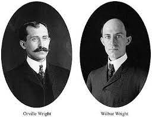

"History of Aviation"
Building on his pioneering work in aeronautics, scientists and engineers began designing and testing airplanes. A young boy made the first manned flight in a glider designed by Cayley in 1849. In 1874, Felix duTemple made the first attempt at powered flight by hopping off the end of a ramp in a steam-driven monoplane.
The work of the Wright brothers inspired an entire generation of flying-machine experimenters in Europe and the Americas. The Brazilian experimenter Alberto Santos-Dumont, for instance, made the first public flight in Europe in 1906 in his 14-bis. Frenchman Henri Farman made his first flight the following year in the Farman III, a machine built by Gabriel Voisin. Farman also completed the first European circular flight of at least 1 km (0.62 mile) early in 1908. On July 4, 1908, the American Glenn Hammond Curtiss, a leading member of the Aerial Experiment Association (AEA), organized by Alexander Graham Bell, won the Scientific American Trophy for a flight of 1 km in the AEA June Bug.
The Santos-Dumont, Voisin, and Curtiss machines were all canard (elevator on the nose) biplanes with pusher propellers that were clearly inspired by what the designers knew of the work of the Wright brothers..

Home
Introduction
History
Types of Airplane
The Anatomy of Airplane
Summary